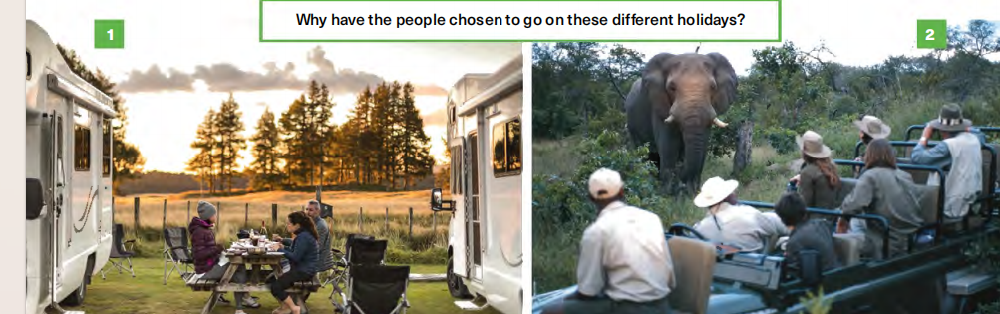

Useful language — photographs (Student A & B)
← Speaking hubWhy have the people chosen to go on these different holidays?

Student A
Use a range of structures to speculate about photos 1 and 2 above (or complete the boxed examples that follow).
look + adjective
They look very .
look like + noun
They look like .
look as if + verb phrase
They look as if .
NB: grammar fix — plural subject uses look, not “looks” (as in some printed captions).
Modal verbs
They be going to work.
They be very interested in wildlife.
Other verbs
I they like the outdoor life.
Student B
Use a range of structures to express preferences (which holiday you’d choose). Complete each line.
I’d to go on a safari.
I’d do this than that.
I’d be nervous about one of those.
I’d riding one of those.
I’d be to travel like that.